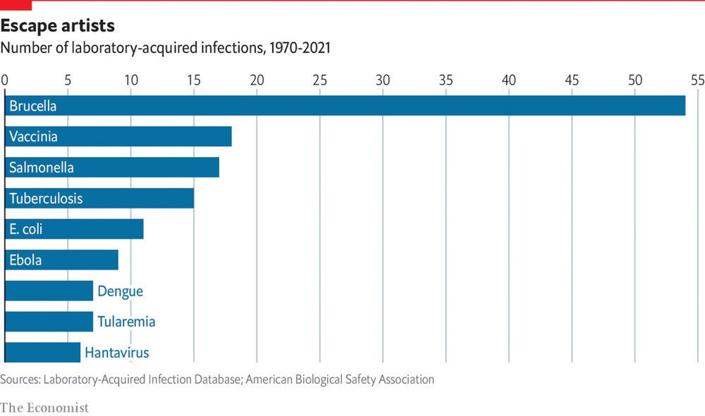
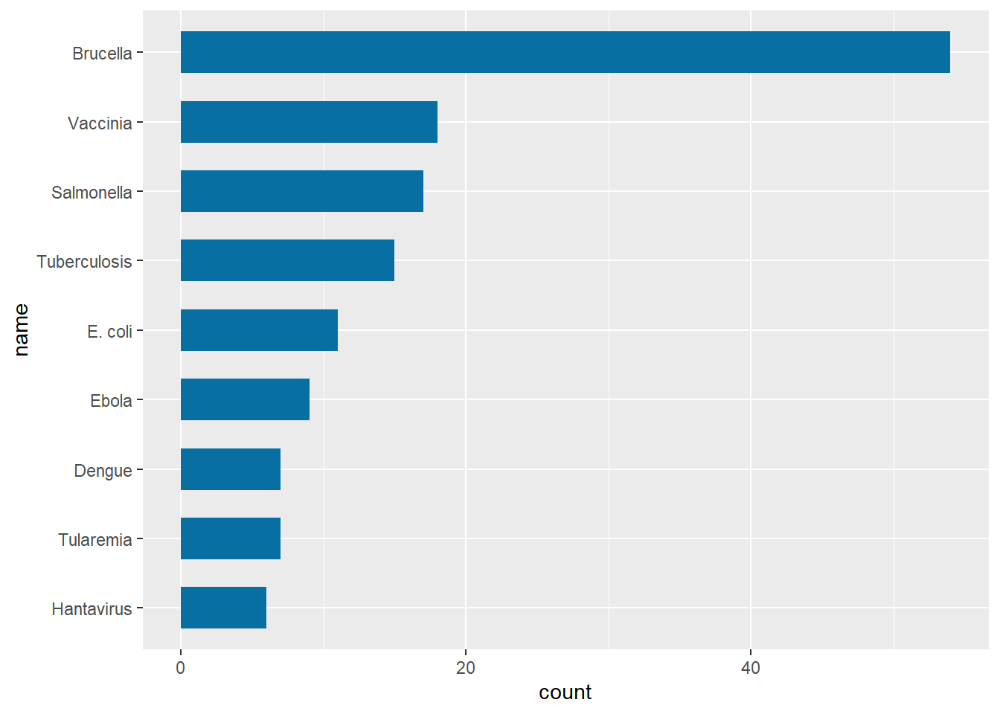
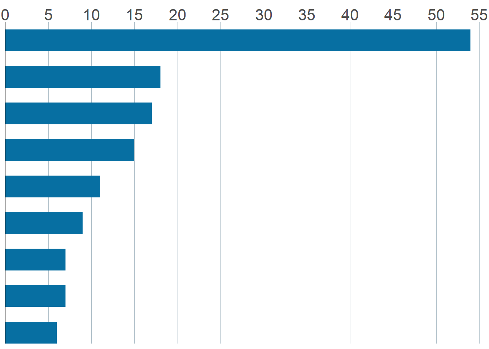
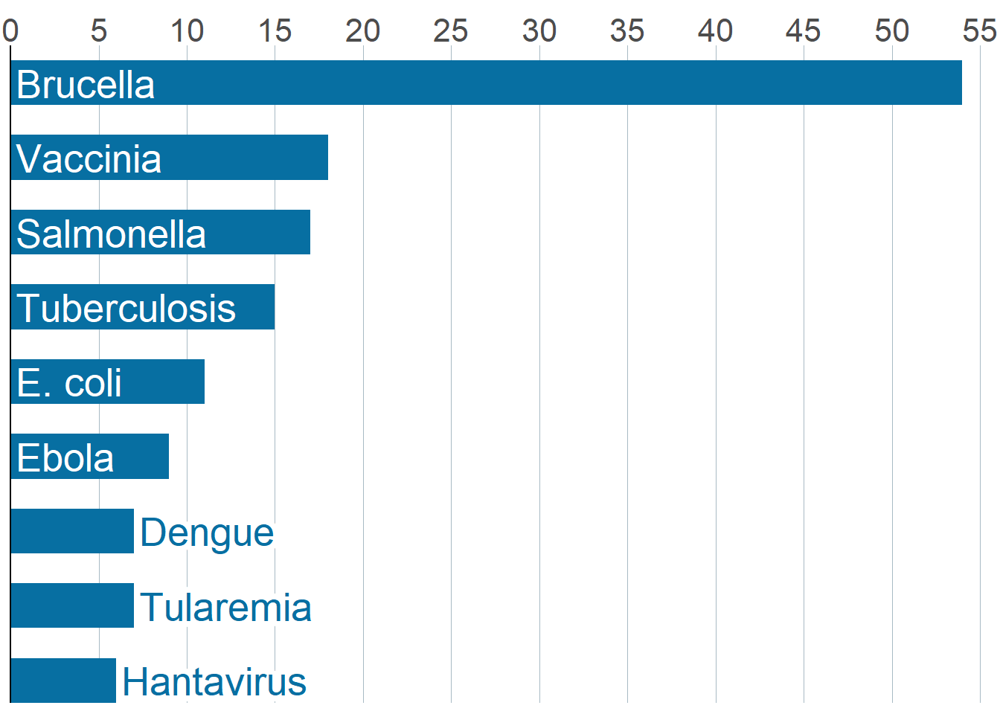

library(grid)
library(tidyverse)
library(shadowtext)Bar chart template
Data Visualization
Data Analysis
A nice looking Economist-esque bar chart
Load packages
Original chart we’re trying to recreate

Create dataset
names <- c(
"Hantavirus", "Tularemia", "Dengue", "Ebola", "E. coli",
"Tuberculosis", "Salmonella", "Vaccinia", "Brucella"
)
# Name is an ordered factor. We do this to ensure the bars are sorted.
data <- data.frame(
count = c(6, 7, 7, 9, 11, 15, 17, 18, 54),
name = factor(names, levels = names),
y = seq(length(names)) * 0.9
)
# Let's also define the colors
BLUE <- "#076fa2"
RED <- "#E3120B"
BLACK <- "#202020"
GREY <- "grey50"Basic Bar Chart
plt <- ggplot(data) +
geom_col(aes(count, name), fill = BLUE, width = 0.6)
plt
Customized Bar chart - v2 layout
# Working on the x and y scales + adjusting the axes
plt2 <- plt +
scale_x_continuous(
limits = c(0, 55.5),
breaks = seq(0, 55, by = 5),
expand = c(0, 0), # The horizontal axis does not extend to either side
position = "top" # Labels are located on the top
) +
# The vertical axis only extends upwards
scale_y_discrete(expand = expansion(add = c(0, 0.5))) +
theme(
# Set background color to white
panel.background = element_rect(fill = "white"),
# Set the color and the width of the grid lines for the horizontal axis
panel.grid.major.x = element_line(color = "#A8BAC4", size = 0.3),
# Remove tick marks by setting their length to 0
axis.ticks.length = unit(0, "mm"),
# Remove the title for both axes
axis.title = element_blank(),
# Only left line of the vertical axis is painted in black
axis.line.y.left = element_line(color = "black"),
# Remove labels from the vertical axis
axis.text.y = element_blank(),
# But customize labels for the horizontal axis
axis.text.x = element_text(family = "Econ Sans Cnd", size = 16)
)
plt2
Bar chart - v3 - Adding Labels
# Adding Labels
plt3 <- plt2 +
geom_shadowtext(
data = subset(data, count < 8),
aes(count, y = name, label = name),
hjust = 0,
nudge_x = 0.3,
colour = BLUE,
bg.colour = "white",
bg.r = 0.2,
family = "Econ Sans Cnd",
size = 7
) +
geom_text(
data = subset(data, count >= 8),
aes(0, y = name, label = name),
hjust = 0,
nudge_x = 0.3,
colour = "white",
family = "Econ Sans Cnd",
size = 7
)
plt3